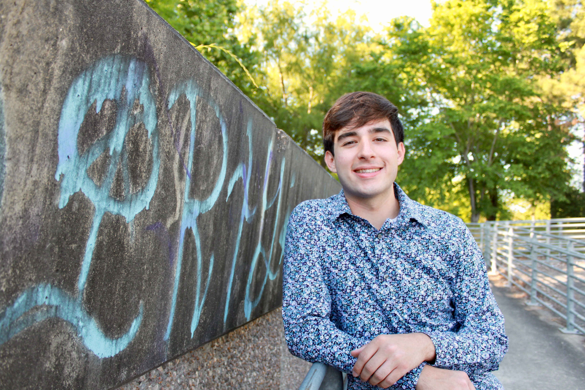

Alexander Parks
Hello! My name is Alex Parks, and I am currently in my final year in the M.S. Computer Science program at UT-Austin.
My main academic and professional interests include data science, machine learning, artificial intelligence, statistics, data analysis, and actuarial science. I am currently searching for full-time employment or research opportunities in these areas beginning in 2027. Feel free to check out the rest of my profile and contact me via phone, email, or LinkedIn message!

Education
The University of Texas at Austin, Austin, TX
Master of Science, Computer Science
- GPA: 4.0
- Relevant coursework: Deep Learning, Reinforcement Learning, Case Studies in Machine Learning, Advanced Linear Algebra, Natural Language Processing
The University of Texas at Austin, Austin, TX
Bachelor of Science, Computer Science
Bachelor of Science, Mathematics
- GPA: 3.74
- Relevant coursework: Principles of Machine Learning I/II, Neural Networks, Trustworthy Machine Learning, Probability I, Applied Statistics, Predictive Analytics, Linear Algebra and Matrix Theory, Data Management, NLP Semantics, Intro to Mathematical Statistics, Intro to Stochastic Processes, Algorithms and Complexity, Data Structures, Software Engineering, Principles of Computer Systems (OS), Computer Organization and Architecture, Geometry of Space (FRI), Intro to Real Analysis, Differential Equations with Linear Algebra
- Activities and societies: Machine Learning and Data Science Club (MLDS), Computer Science Transfers' Society (CSTS), Hispanic Association of Computer Scientists (HACS), Freshman Research Initiative (FRI), Texas Iron Spikes, UT RecSports
Skills
Experience
Regions Bank, Atlanta, GA
Software Engineer Intern
- Developed 5+ new portal components using TypeScript, C, and AWS CLI in an Agile environment for RelationshipIQ, a cloud-native onboarding platform for prospective Regions Bank business clients
- Authored 100+ unit and coverage tests to validate new component behavior and platform integration
- Conducted research on the machine learning and artificial intelligence systems of 10+ peer banks
- Achieved first place in the 2024 Regions Bank AWS GameDay Hackathon
Projects
- Engineered an end-to-end ML pipeline using CollegeFootballData API data from 9,000+ FBS games, incorporating scoring, efficiency, EPA, success rate, Elo, recruiting talent, and game-context features
- Trained and tuned six models: Ridge, Elastic Net, Random Forest, Gradient Boosting, SVR, and a PyTorch neural network using expanding-season cross-validation and an out-of-fold stacking ensemble
- Evaluated final models on an untouched 808-game 2025 holdout, achieving 72.9% winner accuracy and MAEs of 12.55 for scoring margin and 12.65 for total score
- Constructed a dataset of 750+ political sentence prefixes by scraping articles from multiple news organizations and generating paired counterfactual prompts with matched political terminology
- Generated sentence completions across several LLMs using Hugging Face Transformers and the OpenAI API to compare behavior across multiple generations of language models
- Built an NLP evaluation pipeline using transformer-based sentiment analysis to quantify and compare sentiment differences between model outputs from paired political prompts
RefLab (password available upon request)
- Built an educational platform for football referees using React and TypeScript with a Python ETL pipeline, creating a searchable 588-node rule corpus from the NCAA Rules Book with hierarchical metadata and linked citations
- Engineered a RAG assistant using custom BM25 retrieval, query expansion, exact-ID matching, and rule graph traversal
- Designed citation-grounding safeguards and a 48-question RAG evaluation suite, achieving 100% citation recall at the top-eight cutoff and 98.68% average citation recall with the final retriever
- Combined six energy and weather time-series datasets into 35,000+ hourly observations across four years of electricity-market data, using pandas for imputation, outlier removal, and feature engineering
- Evaluated seven regression algorithms using GridSearchCV, utilizing correlation-based feature selection, PCA dimensionality reduction, and daily, weekly, and monthly temporal aggregations
- Developed a scikit-learn VotingRegressor ensemble using tuned KNN and AdaBoost models, achieving an R-squared of 0.933 for electricity-price prediction
- Developed a full-stack recipe and nutrition web application using React, TypeScript, Flask, and PostgreSQL, enabling users to explore recipes, ingredients, and dietary groups
- Designed a relational data model with SQLAlchemy using many-to-many relationships across recipes, ingredients, and diet groups and developed REST API endpoints for search and entity retrieval
- Deployed the Python backend using Google App Engine and implemented automated API tests to validate endpoint responses, data types, and returned values
- Created a single-page personal website using HTML and CSS, featuring 6+ anchored sections, a sticky navigation bar, and smooth-scrolling navigation
- Designed and implemented a responsive, theme-aware UI with dark/light mode support and mobile breakpoints to ensure consistent styling and usability across devices
Memory Management System
- Designed and implemented a dynamic storage allocator in C using an address-ordered explicit free list, bitwise metadata encoding, and 16-byte alignment to replicate the core behavior of malloc() and free()
- Implemented first-fit selection, block splitting, heap expansion, and adjacent-block coalescing, validating correctness and performance with heap-consistency checks and trace-driven tests
Leadership and Community Involvement
Computer Science Transfers’ Society (CSTS)
President (2024 - 2025), Treasurer (2023 - 2024), Member (2021 - 2025)
- Planned and budgeted for transfer application and professional workshops, officer meetings, and socials
- Designed, procured, and distributed organization merchandise to 50+ active members
- Authored and distributed an annual sponsorship prospectus for current and potential corporate partners
Texas Iron Spikes
Administrative Officer (2023), Member (2021 - 2025)
- Designed, acquired, and distributed organization merchandise to 100+ active members
- Collected and managed over $5,000 in purchase orders, coordinating payment and distribution logistics
- Engaged in community service initiatives including park cleanups, gardening programs, and meal drives
Honors and Awards
- Hispanic Scholarship Fund Scholar (Fall 2020/21/23/24/26)
- Andersen Foundation Scholar (Fall 2024)
- Eva Stevenson Woods Endowed Presidential Scholar (Fall 2024)
- University Honors (Fall 2021/22/24, Spring 2022/23/24)
- Bitar Family Endowed Scholar in Computer Science (Fall 2023)
- AP Scholar with Distinction (Fall 2020/21)
- National Merit Commended Scholar (Fall 2020)
- National Hispanic Scholar (Fall 2020)
- AP Scholar (Fall 2019)